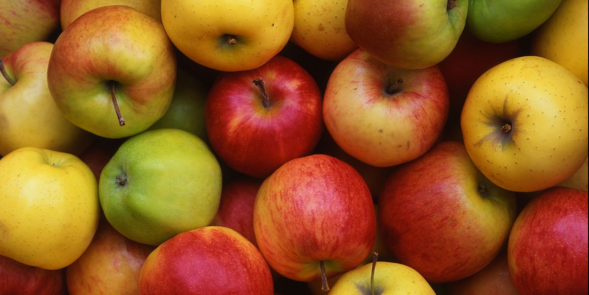
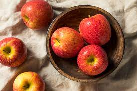

Course: CCPS 530 1J0 - Web Systems Development Professor Ghassem Tofighi

What is an Apple?
An apple is an edible fruit produced by an apple tree. Apple trees are cultivated worldwide and are the most widely grown species in the world.
The tree originated in Central Asia.There are more than 7,500 known cultivars of apples. Different cultivars are bred for various tastes and use, including cooking, eating raw and cider production.
Apple is a really good food as it has a lot of nutrients.
Apple Production (2019):
Country
Millions of Tonnes
China
42.6
United States
5.0
Turkey
3.6
Poland
3.1
Iran
2.4
Italy
2.3
Worldwide
87.2
Data provided by the United Nations
Different Types of Apples:
Alice
Ambrosia
Ananasrenette
Aroma
Belle de Boskoop
Bramley
Cox's Orange Pippin
Cripps Pink
Discovery
Egremont Russet
Fuji
Gala
Gloster
Golden Delicious
Goldrenette
Granny Smith
Honeycrisp
James Grieve
Jonagold
Lobo
McIntosh
Sciros
Red Delicious
Sampion
Stark Delicious
SugarBee
Summerred
Tellissaare
Yellow Transparent
McIntosh

What can an apple be used for?
An apple can be eaten raw or it can be used when cooking and/or baking. Apple can also be used to make drinks, such as apple juice.